EPUB, PDF, DjVu, FB2 і MOBI просто в браузері, на телефоні й комп'ютері. Нотатки, X-Ray, словник, статистика читання, картки для повторення й AI-помічник, який читає разом із вами.
Безкоштовно, з відкритим кодом (MIT). Книги зберігаються лише у вашому браузері. На телефоні: «Поділитися» → «На початковий екран».
Знімки з телефона. Книжки на них — демонстраційні, написані для цієї сторінки.
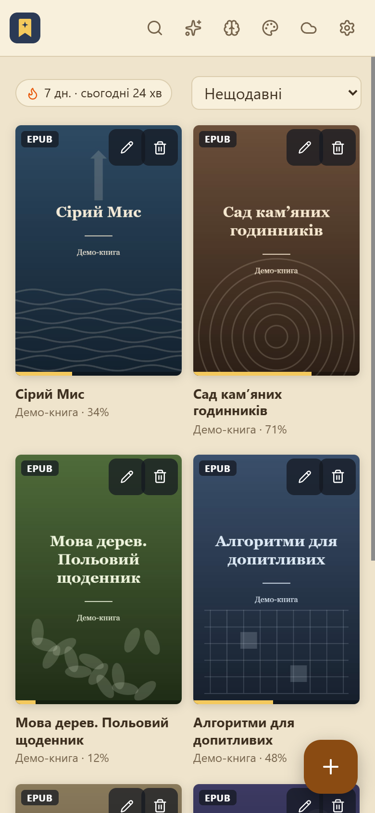
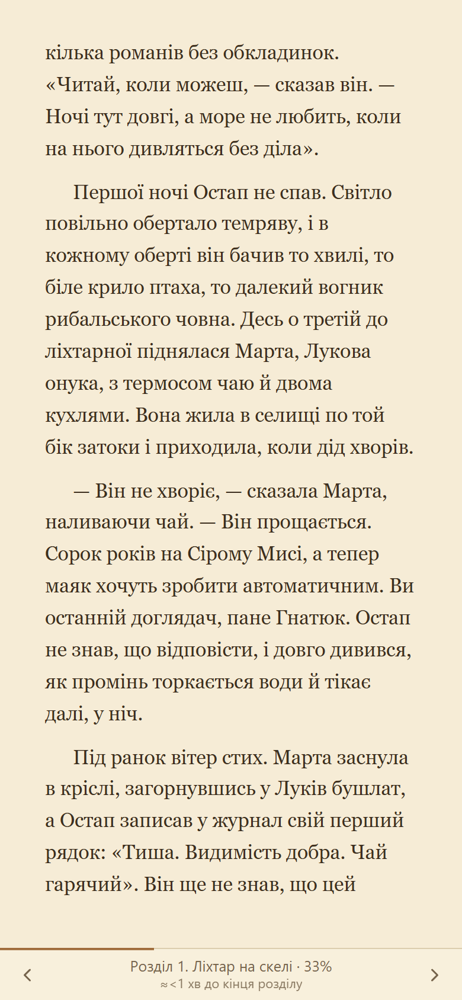
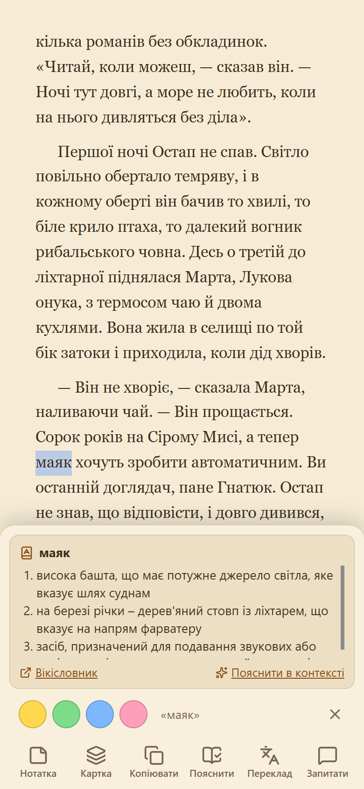
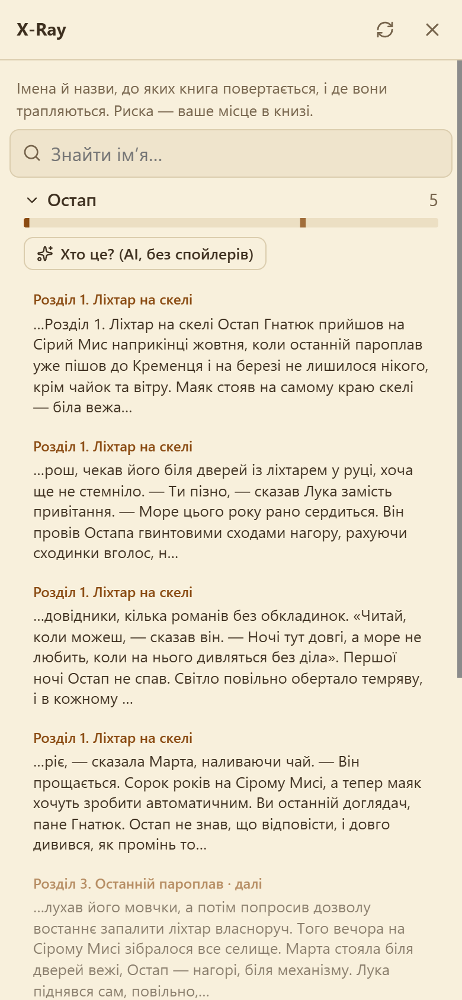
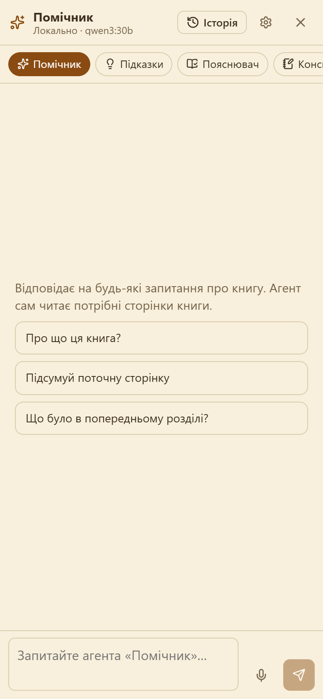
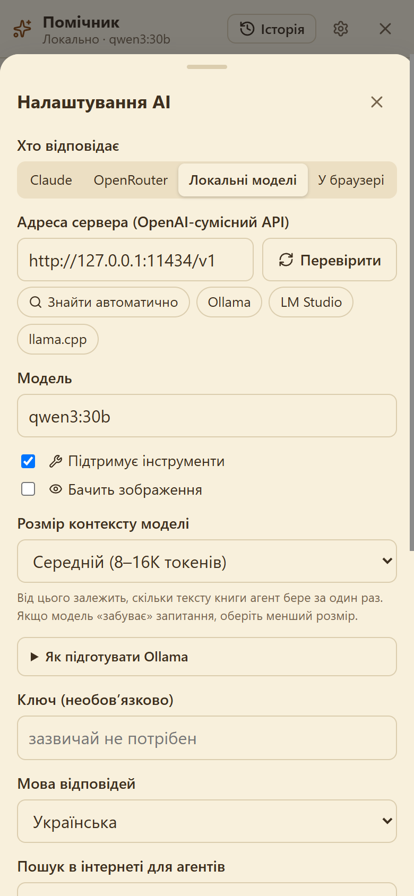
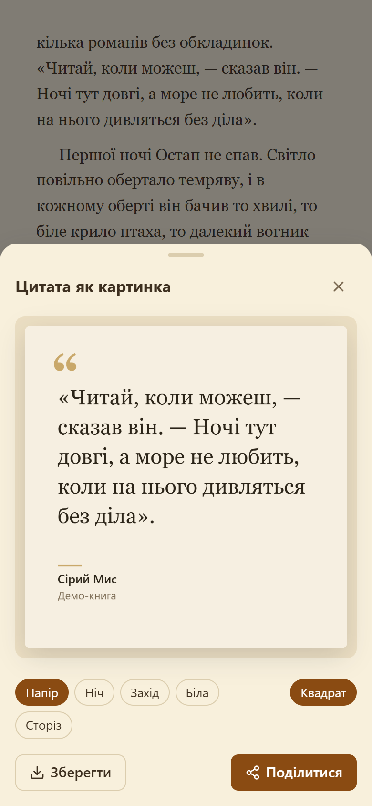
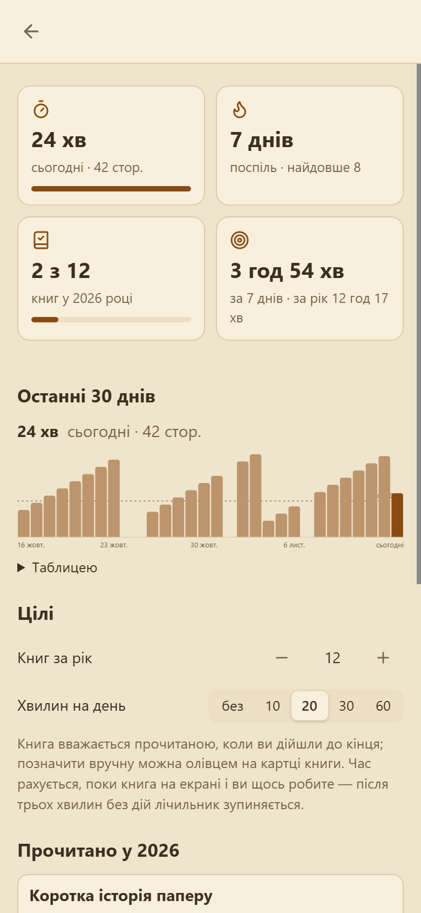
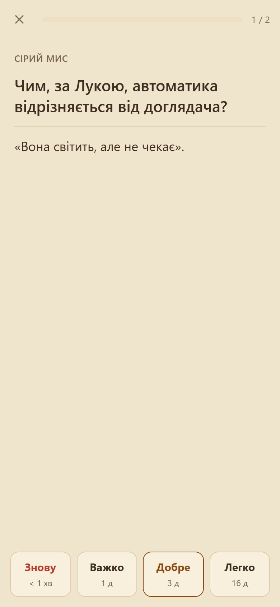
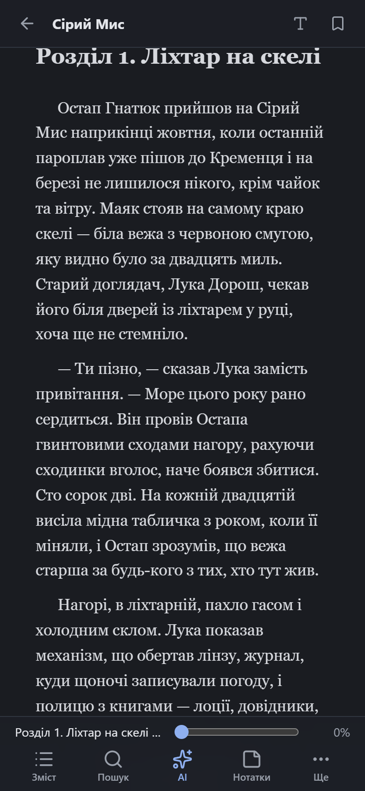
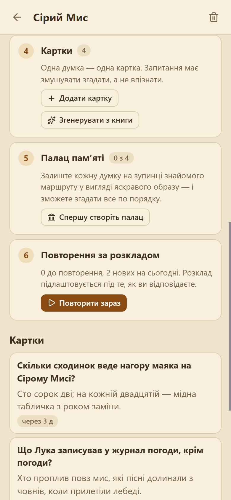
Дві сторінки поруч, як розворот книжки, і бічна панель — тут X-Ray.
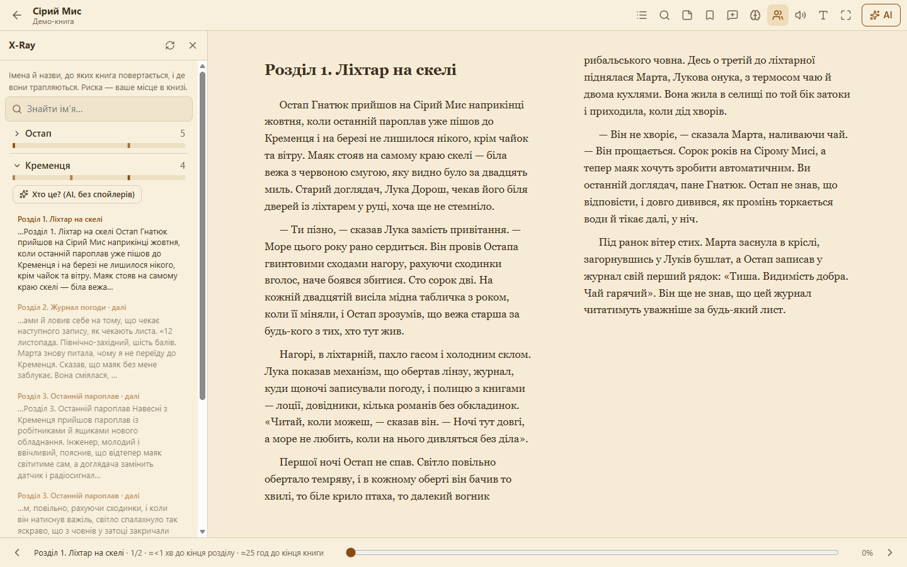
Усе працює в браузері; сервер потрібен лише для кількох мережевих функцій.
npm run serve) додає збереження статей, вебпошук для агентів і доступ до локальних моделей з телефона. Інструкція — у README.